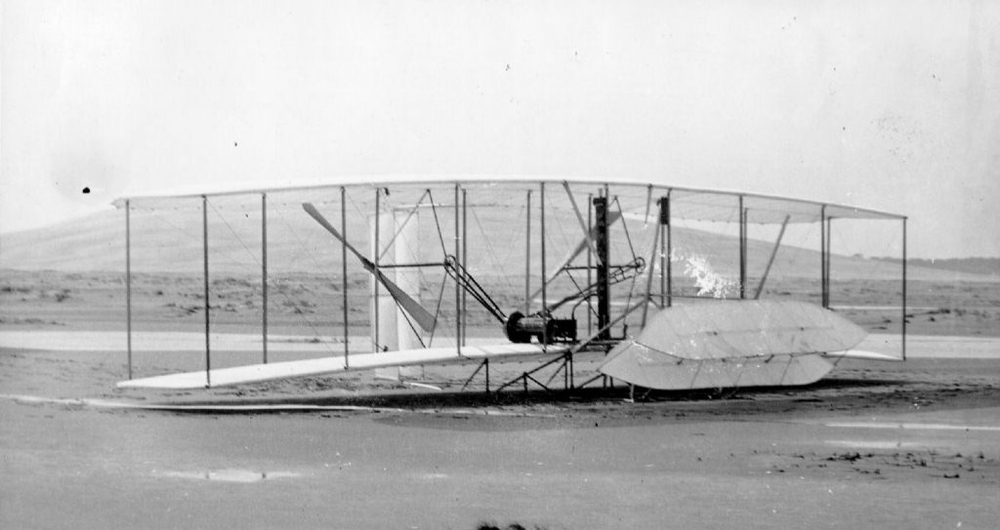
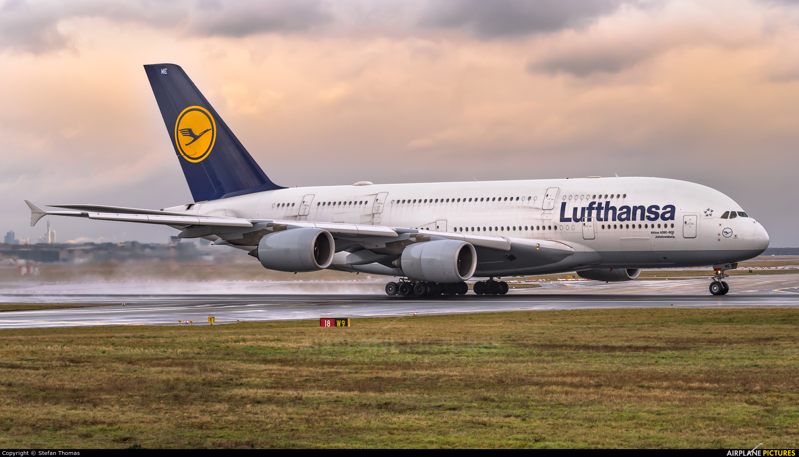

Airplane History
Airplane History
The people in the past always dreamed of flying like bird some inventors tried to copy to the wings of an bird, but no succes. Until one day on the 17th of december 1903, Orville and Wilbur Wright(also know as the Wright brothers)builded the first motor powered airplane because before some more people made gliders(Airplanes without motor)but the Wright brothers launched the first airplane in USA in Kitty Hawk near north Carolina and more information the first airplane was launched at 10:35 a.m.
The airplane was double decker airplane and the airplane was powered by an otto-motor engine.
The Airplane Tries
Do you think that the brothers had only one plane ? Well if you said 'yes' then you are wrong the brothers in total had 4 wright flyers: The wright flyer | (size: 6,43m, max-speed: 48 km/h, year: 1903), then the Wright Flyer || (size: 6,43m, max-speed: 56 km/h, year: 1904), and then the Wright Flyer ||| (size: 8,54m, max-speed: 56 km/h, year: 1905) and last but not least the Wright Flyer ||||(size: 9,45m, max-speed: 60 km/h, year: 1908). Each of the airplanes had different sizes and flew different meters. The Wright Flyer | flew 12sec with 16 km/h and did 37m, the Wright Flyer || flew 13sec and 53m, the Wright Flyer ||| flew 15sec and did 61m and the Wright Flyer |||| flew in one minute 259,7m.
Comparison
Now that we know more about the history lets compare with the airplanes today shall we? OK then lets get started, this is the Wright Flyer One: And this is the Airbus A380 Lufthansa:
The Airplane Wright Flyer One was made in 1903 and the Airbus A380 was first launched in 2005 and thats a different of 102 years different and now there are more advanced airplanes and from 2023 to 1903 thats a difference of 120 years so the first plane was created a long time ago and we should thank Orville and Wilbur Wright for the creation of the first motor powered aircraft(Airplane), and lets not forget to thank Hans Ohain from Germany and british ingineer Frank Whittle they together created the first airplane engine and that was in 1941 the engine was finally done.